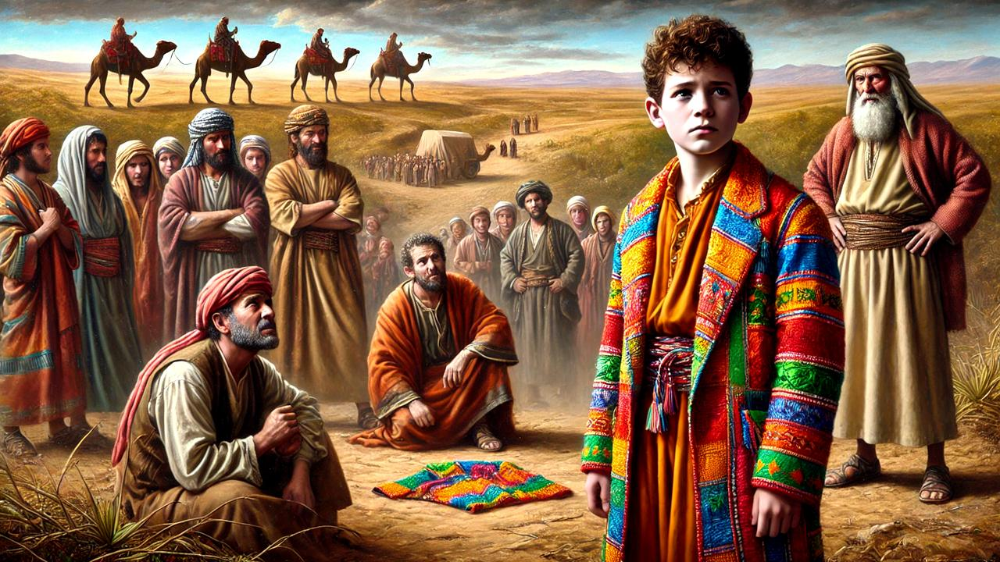
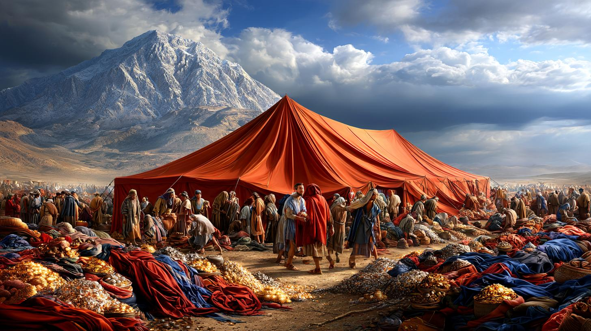
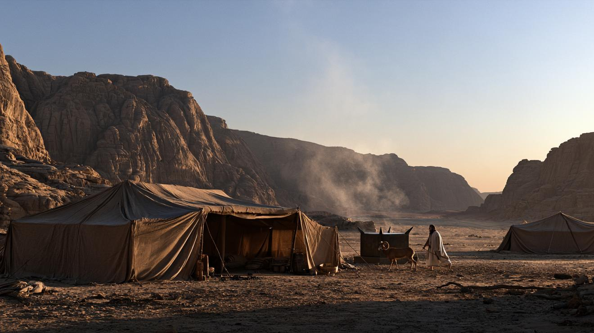
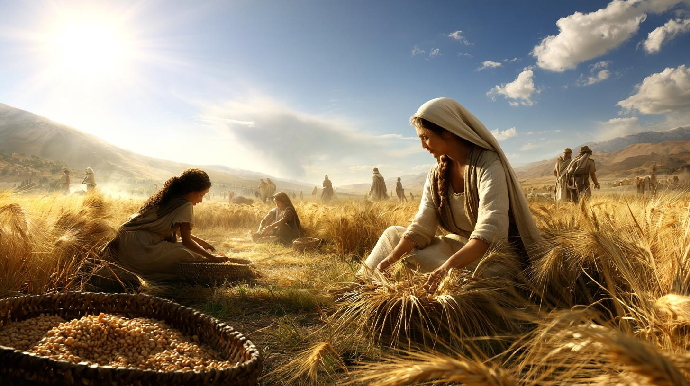
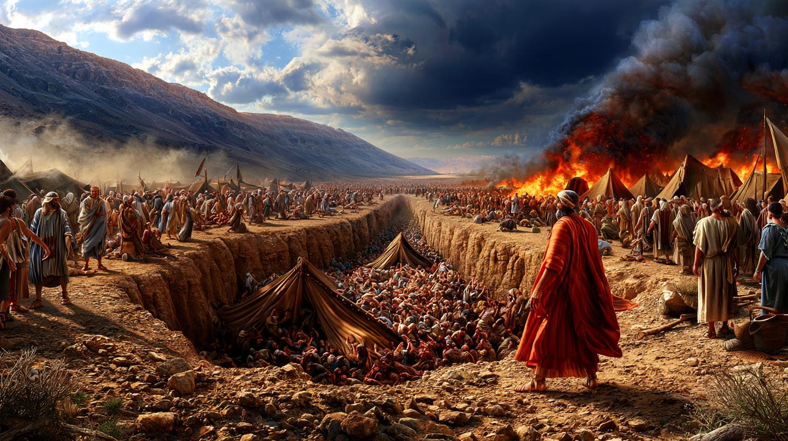
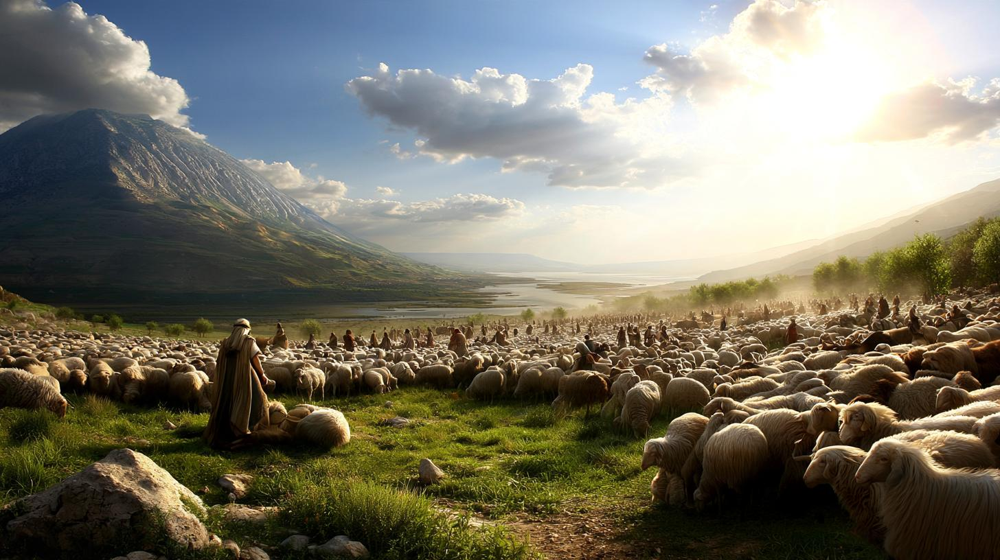
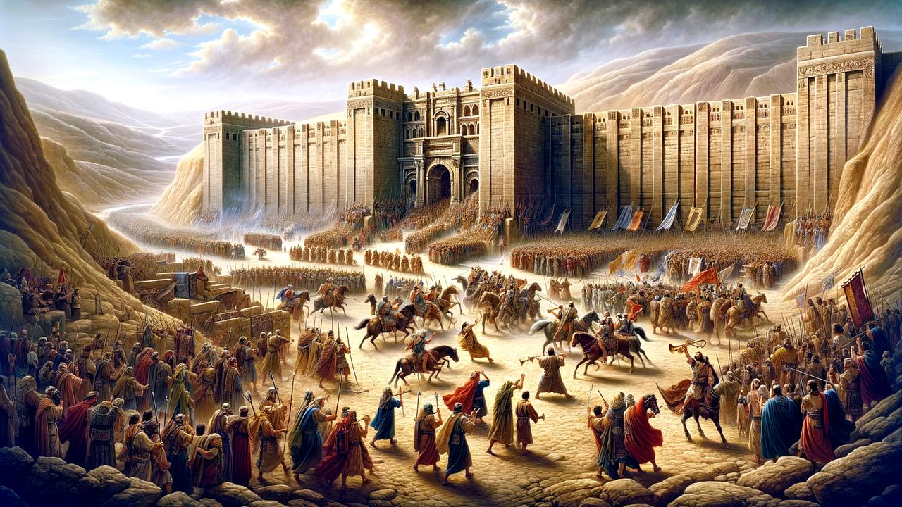

Création, Éden, Caïn et AbelCreation, Eden, Cain and Abel
Déluge, tour de BabelFlood, Tower of Babel
Appel d'Avram, allianceAbram's call, covenant
Sodome, ligature d'IsaacSodom, binding of Isaac
Mort de Sarah, RébeccaSarah's death, Rebekah
Jacob et ÉsaüJacob and Esau
Échelle de Jacob, Léa et RachelJacob's ladder, Leah and Rachel
Jacob devient IsraëlJacob becomes Israel

Joseph vendu par ses frèresJoseph sold by his brothers
Rêves de Pharaon, Joseph vizirPharaoh's dreams, Joseph rises
Joseph se révèleJoseph reveals himself
Bénédictions et mort de JacobJacob's blessings and death
Esclavage, buisson ardentSlavery, burning bush
Les sept premières plaiesThe first seven plagues
Dernières plaies, PessahLast plagues, Passover
Traversée de la mer, manneCrossing the sea, manna
Sinaï, Dix ParolesSinai, Ten Commandments
Lois civilesCivil laws

Plans du TabernacleTabernacle plans
Vêtements des prêtresPriestly garments
Veau d'or, tables briséesGolden calf, broken tablets
Construction du TabernacleBuilding the Tabernacle
La nuée sur le TabernacleThe cloud on the Tabernacle

Les sacrificesThe offerings
Rôle des prêtresThe priests' role
Nadav et Avihou, cacherouteNadab and Abihu, kashrut
Naissance, tsaraatBirth, tzaraat
PurificationPurification
Yom KippourYom Kippur

« Aime ton prochain »“Love your neighbour”
Les fêtes de l'annéeThe festivals
Année sabbatique, jubiléSabbatical year, jubilee
Bénédictions et malédictionsBlessings and curses
Recensement, le campCensus, the camp
Nazir, bénédiction des prêtresNazirite, priestly blessing
Départ du Sinaï, murmuresLeaving Sinai, complaints
Les explorateursThe spies

La révolte de Korah'Korah's revolt
Vache rousse, morts de Myriam et d'AaronRed heifer, deaths of Miriam and Aaron
Balaam et l'ânesseBalaam and the donkey
Pinhas, filles de Tselofh'adPhinehas, Zelophehad's daughters

Vœux, tribus de TransjordanieVows, Transjordan tribes
Étapes du désert, villes refugesWilderness stages, cities of refuge
Moïse revient sur le désertMoses recalls the wilderness
Chema IsraëlShema Yisrael
Récompense et mémoireReward and memory
Bénédiction ou malédictionBlessing or curse
Juges, rois, prophètesJudges, kings, prophets
74 commandements74 commandments
Prémices, malédictionsFirst fruits, curses
« Choisis la vie »“Choose life”

Josué succède à MoïseJoshua succeeds Moses
Le chant de MoïseMoses' song
Bénédictions, mort de MoïseBlessings, death of Moses
Ta progression, sur tous tes appareilsYour progress, on all your devices
Le site sert à lire et à partager. L’app garde ta progression et tes quiz, synchronisés par iCloud entre ton iPhone, ton iPad et ton Mac, et fonctionne hors ligne.The website is for reading and sharing. The app keeps your progress and quizzes, synced by iCloud across your iPhone, iPad and Mac, and works offline.